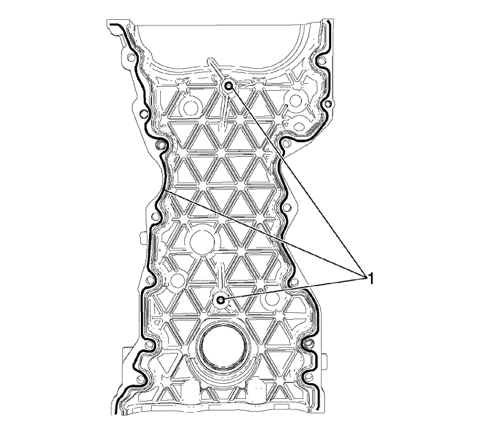
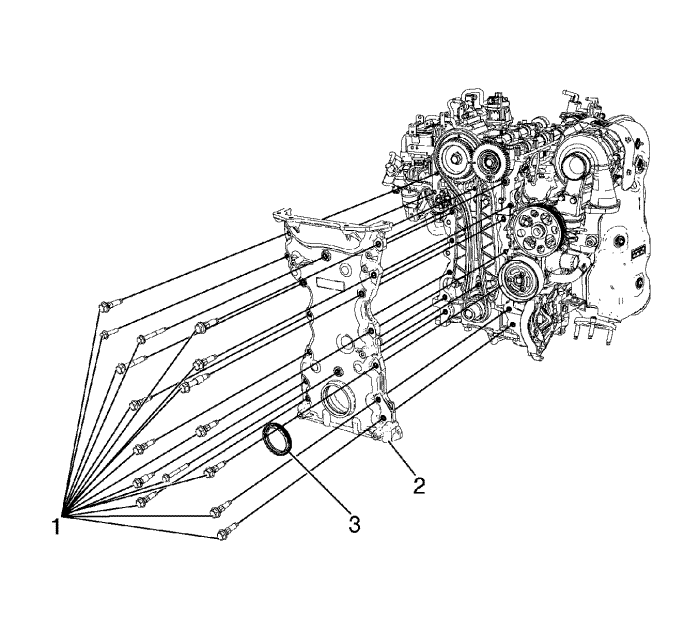

Montaje de la cubierta delantera del motor
Herramientas especiales
| • | EN-50427 Herramienta de montaje del retén de aceite delantero del cigüeñal |
Si desea informarse sobre herramientas regionales equivalentes, consultar Herramientas especiales .
Nota:
| • | Asegúrese de que la superficie de la cubierta delantera no tiene aceite, grasa ni material de sellado viejo. |
| • | No cubra con sellador los orificios de los tornillos de la cubierta delantera, ya que podría dañar sus roscas o el motor. |

- Aplique sellador (Three-Bond, 12378521) sobre la línea para sellador (1).

Nota: Para evitar confusiones y facilitar el trabajo, ajuste el pasador de guía EN-50435 2 en el bloque motor y en la culata antes del montaje.
- Monte la tapa delantera de la cadena de distribución (2).
- Monte el retén de aceite delantero del cigüeñal (3). Consultar Montaje de la junta del aceite delantera del cigüeñal .
Precaución: Consulte Precaución con las fijaciones en la sección Prólogo
- Coloque los pernos de fijación de la cubierta delantera de la cadena de distribución (1).
Apretar
| • | Apriete el perno de fijación (M8) de la cubierta delantera de la cadena de distribución a 22 N·m (16,2 lib. pie). |
| • | Apriete el perno de fijación (M6) de la cubierta delantera de la cadena de distribución a 9 N·m (79,6 lib. pulg.). |
- Monte la polea del cigüeñal. Consultar Montaje de la polea del cigüeñal .
- Monte el adaptador del filtro de aceite del motor. Consultar Montaje del adaptador del filtro de aceite .
- Monte el soporte de fijación del motor y la polea loca. Consultar Montaje del soporte de montaje del motor : LNP → LNQ .
- Montar el cárter de aceite. Véase Montaje del cárter de aceite superior : LNP → LNQ o Montaje del cárter de aceite inferior : LNP → LNQ .
- Monte la tapa del árbol de levas. Consultar Montaje de la tapa de los árboles de levas .
| © Copyright Chevrolet Europe. All rights reserved |